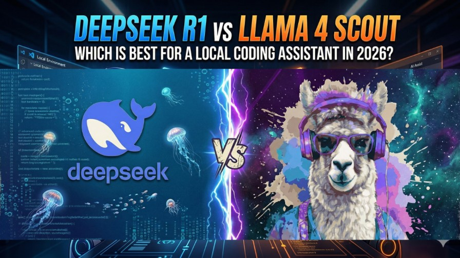

In 2026, paying for GitHub Copilot or ChatGPT Plus to help with coding feels increasingly unnecessary. Two of the most powerful open-weight AI models ever released — DeepSeek R1 from the Chinese AI lab DeepSeek, and Llama 4 Scout from Meta — are available for free, can run entirely on your own machine, and have no rate limits.
But they are built very differently, designed for different strengths, and require very different hardware.
The question is not which model is "better" globally. The real question is: which model is better for you, on your hardware, for the specific way you code?
Here is the definitive 2026 comparison of DeepSeek R1 vs Llama 4 Scout for local coding.
Why Run a Coding AI Locally at All?
Beyond privacy, local AI has real practical advantages in 2026:
- Zero latency from your desk: No round-trip to a data center. Your model lives next to your files.
- No rate limits: Run 500 queries at 2 AM if you want. No tokens, no throttle.
- No subscription creep: Pay once for hardware. No monthly billing.
- Offline-capable: Works on a plane, at a cabin, behind a corporate firewall.
The ecosystem has matured to the point where running a local coding AI is no longer a "hacker project" — it is a practical daily workflow. Tools like Ollama (model server), Continue.dev (VS Code Copilot replacement), and LM Studio (GUI for model management) make the whole setup achievable in under 30 minutes.
Meet the Contenders
DeepSeek R1 — The Reasoning Specialist
Released in January 2025, DeepSeek R1 sent shockwaves through the AI industry by matching OpenAI's o1 reasoning model in benchmark scores — at a fraction of the development cost. Its defining feature is chain-of-thought (CoT) reasoning: the model thinks through problems step-by-step out loud, producing a visible "scratchpad" before giving its final answer.
For coding, this means R1 doesn't just guess the fix — it explains the logic of why a bug exists, traces through execution paths, and often catches the root cause that a faster model would miss entirely.
The honest caveat: You almost certainly will not run the full 671B model locally. DeepSeek's real contribution for local users is the distilled versions — smaller models (8B, 14B, 32B, 70B) that were trained using R1's reasoning as a teacher. The 14B distilled version runs on 10 GB of RAM and brings surprising reasoning depth to low-end hardware.
Llama 4 Scout — The Context King
Meta released Llama 4 Scout on April 5, 2025 as part of the new Llama 4 family. Scout is a Mixture-of-Experts model with a headline-grabbing 10 million token context window — the largest of any publicly available model. It is natively multimodal, meaning it can analyze images alongside code, and it activates only 17 billion of its 109 billion parameters per token, making it faster than its total size suggests.
For coding, Scout's killer capability is whole-codebase analysis. With enough RAM, you can feed the model an entire repository — tens of thousands of lines — and ask it to find architectural problems, write missing tests, or explain a legacy system from scratch.
The honest caveat: The MoE architecture means Scout is memory-hungry despite its efficiency. You pay the VRAM cost for all 109B weights, even though only 17B activate per token. At Q4 quantization, you need around 55 GB of RAM — that is a Mac Studio with 64 GB of unified memory, or a server with 64 GB RAM running aggressive CPU offloading. It is not a machine for a 16 GB laptop.
The Critical Issue: What Can You Actually Run Locally?
This is the most important nuance in this entire comparison. The "DeepSeek R1" you run locally is almost never the actual 671B parameter flagship model. It is one of the distilled versions — models that learned reasoning from R1 but have been compressed to a runnable size.
| Model | RAM Required (Q4) | Practical Hardware | Reasoning Quality | Speed |
|---|---|---|---|---|
| R1-Distill-Qwen-7B | ~5 GB | Any 8 GB laptop | ⭐⭐⭐ | ⭐⭐⭐⭐⭐ Very Fast |
| R1-Distill-Qwen-14B | ~9 GB | 16 GB RAM PC | ⭐⭐⭐⭐ | ⭐⭐⭐⭐ Fast |
| R1-Distill-Qwen-32B | ~20 GB | 32 GB RAM PC | ⭐⭐⭐⭐⭐ | ⭐⭐⭐ Moderate |
| R1-Distill-Llama-70B | ~43 GB | 64 GB RAM Server / Mac | ⭐⭐⭐⭐⭐ | ⭐⭐ Slow locally |
| Llama 4 Scout (Q4) | ~55 GB | 64 GB RAM Mac Studio / Server | ⭐⭐⭐⭐ | ⭐⭐⭐ Moderate |
| Llama 4 Scout (2-bit) | ~27 GB | 32 GB RAM (aggressive) | ⭐⭐⭐ | ⭐⭐⭐⭐ Fast |
Head-to-Head: Coding Use Cases
1. Debugging a Complex Bug
This is where DeepSeek R1 shines brightest. Its chain-of-thought training means it does not jump to answers — it traces the call stack, identifies edge cases, explains the precise line where state becomes corrupted, and tells you why the fix works. Developers consistently report that R1 distilled models debug better than models twice their parameter count that lack the reasoning training.
🏆 Winner: DeepSeek R1 (Distilled)
R1's chain-of-thought reasoning makes it significantly more reliable for root-cause debugging. It explains why a bug exists, not just how to patch it.
2. Analyzing an Entire Codebase
Llama 4 Scout's 10 million token context window is in a category of its own. With 64 GB of RAM, you can feed the model an entire repository of 50,000+ lines and ask: "Why does this authentication flow fail on mobile?" or "Find all the places this deprecated function is still being called." No other locally-runnable model comes close to this capability.
🏆 Winner: Llama 4 Scout
Nothing matches Scout's 10M token context for whole-repository analysis. If your task requires the model to hold the entire codebase in mind, Scout is the only choice.
3. Code Generation from a Screenshot or Diagram
Llama 4 Scout is natively multimodal using early fusion — it understands images at a deep level, not through a bolted-on adapter. This means you can paste a UI mockup, a system architecture diagram, or an error screenshot directly into your query and ask it to generate code that matches. DeepSeek R1 is text-only and cannot process images at all.
🏆 Winner: Llama 4 Scout
DeepSeek R1 is text-only. Scout's native multimodal capability unlocks entirely new workflows like "generate this component from a screenshot."
4. Algorithm Design and Mathematical Reasoning
DeepSeek R1 was explicitly trained via reinforcement learning to excel at math and logic. On benchmarks like AIME (math olympiad problems) and MATH, R1 distilled models consistently outperform equivalently-sized general models. When you ask it to design a sorting algorithm, prove a solution's time complexity, or optimize a dynamic programming problem, R1's reasoning chain makes the difference visible.
🏆 Winner: DeepSeek R1 (Distilled)
R1's RL-based reasoning training gives it a measurable edge on mathematical algorithm design and proof-style explanations that general models miss.
5. Tab Autocomplete (Speed Matters)
For live autocomplete in your editor, raw token speed is everything. Waiting 3 seconds for a completion suggestion breaks flow state. DeepSeek R1 distilled models at 7B or 14B size are fast enough on a 16 GB machine for comfortable autocomplete. Scout at Q4 quantization (55 GB) is noticeably slower per token due to the memory bandwidth demands of loading 109B weights — even though only 17B activate. Neither is ideal for autocomplete; a smaller specialist like Qwen2.5-Coder 7B is the recommended choice for tab completion.
🏆 Winner: DeepSeek R1 Distilled (for smaller configs)
The 7B and 14B distilled models are fast enough for interactive autocomplete. Scout at Q4 is too large for snappy live completions on most consumer setups.
The Full Comparison Table
| Capability | DeepSeek R1 (Distilled) | Llama 4 Scout | Winner |
|---|---|---|---|
| Debugging / Root Cause | ⭐⭐⭐⭐⭐ Chain-of-thought | ⭐⭐⭐⭐ Good | 🔴 DeepSeek R1 |
| Context Window | ⭐⭐⭐ 128K | ⭐⭐⭐⭐⭐ 10M tokens | 🟢 Llama 4 Scout |
| Image + Code Input | ❌ Text only | ✅ Native multimodal | 🟢 Llama 4 Scout |
| Math / Algorithm Reasoning | ⭐⭐⭐⭐⭐ RL-trained | ⭐⭐⭐⭐ Strong | 🔴 DeepSeek R1 |
| Min. RAM to Run Well | ⭐⭐⭐⭐⭐ 9 GB (14B distill) | ⭐⭐ ~55 GB (Q4) | 🔴 DeepSeek R1 |
| Autocomplete Speed | ⭐⭐⭐⭐ Fast (7–14B) | ⭐⭐⭐ Slower | 🔴 DeepSeek R1 |
| Code Explanation / Teaching | ⭐⭐⭐⭐⭐ Step-by-step | ⭐⭐⭐⭐ Good | 🔴 DeepSeek R1 |
| Enterprise / Privacy-Safe? | ⭐⭐⭐ (Chinese lab, evaluate per org) | ⭐⭐⭐⭐⭐ Meta, fully local | 🟢 Llama 4 Scout |
| Multilingual Code Comments | ⭐⭐⭐ Moderate | ⭐⭐⭐⭐⭐ 200 languages trained | 🟢 Llama 4 Scout |
| License Openness | ⭐⭐⭐⭐⭐ MIT | ⭐⭐⭐⭐ Custom (EU restricted) | 🔴 DeepSeek R1 |
A Note on Privacy and Data Sovereignty
DeepSeek is a Chinese AI lab. This is a factual consideration your organization should evaluate — not a reason to avoid the model outright, but a reason to understand the tradeoffs. When you self-host DeepSeek R1 distilled weights on your own machine via Ollama, no data leaves your hardware. The model weights are just files on your disk. There is no telemetry, no API call to DeepSeek's servers, no exposure to Chinese data law. The privacy concern applies to DeepSeek's cloud API — not to running the open-weight model locally.
Llama 4 Scout is a US-based Meta product with a community license. For regulated industries, government contractors, or enterprises with strict compliance requirements, Scout's provenance may be preferable even when both are run fully locally.
The Recommended Local Coding Stack for 2026
Most developers do not have to pick just one model. The smartest setup uses different models for different jobs:
- Install Ollama — your local model server:
curl -fsSL https://ollama.com/install.sh | sh - Pull DeepSeek R1 distilled for reasoning/chat:
ollama pull deepseek-r1:14b - Pull a fast model for tab autocomplete:
ollama pull qwen2.5-coder:7b - Install Continue.dev in VS Code — your free local Copilot replacement. Set the chat model to
deepseek-r1:14band the autocomplete model toqwen2.5-coder:7b. - Optional: Pull Llama 4 Scout if you have 64 GB RAM and want multimodal or massive context:
ollama pull llama4:scout
Who Should Choose What?
| If you are... | Choose | Why |
|---|---|---|
| A developer on a 16–32 GB laptop or Mini PC | DeepSeek R1 Distill 14B | Runs in 9 GB, excellent reasoning, fast enough for interactive use |
| A developer with a 64 GB Mac Studio or workstation | Llama 4 Scout (Q4) | Unlocks multimodal + 10M context whole-codebase analysis |
| Working on math-heavy / algorithm code | DeepSeek R1 Distill 32B | RL-trained reasoning dominates for complex logic tasks |
| Analyzing images, diagrams, or UI screenshots | Llama 4 Scout | DeepSeek R1 is text-only; Scout handles images natively |
| In a regulated enterprise (compliance matters) | Llama 4 Scout | Meta's provenance is simpler to justify in compliance review |
| Wanting the most permissive open license for finetuning | DeepSeek R1 Distilled | MIT license — modify, finetune, redistribute freely |
People Also Ask (FAQ)
Common questions about DeepSeek R1 and Llama 4 Scout as local coding assistants.
Which is better for local coding: DeepSeek R1 or Llama 4 Scout?
+It depends on your hardware and use case. DeepSeek R1 distilled versions (8B/14B) are better for complex debugging and step-by-step reasoning on limited hardware. Llama 4 Scout is better if you need multimodal input (images + code) or a massive 10M token context window to analyze entire codebases. For most developers on 16–32 GB RAM, DeepSeek R1 distilled models win on reasoning depth per VRAM dollar.
Can I run DeepSeek R1 full (671B) locally?
+No, not practically. The full DeepSeek R1 model requires approximately 400 GB of RAM/VRAM. For local use, always run the distilled versions: deepseek-r1:14b (~9 GB RAM) or deepseek-r1:32b (~20 GB RAM). These inherit the chain-of-thought reasoning of the full model at a fraction of the memory cost.
How much RAM does Llama 4 Scout require to run locally?
+Despite having only 17B active parameters, Llama 4 Scout loads all 109B total parameters into memory. At 4-bit quantization, this is approximately 55 GB of RAM or VRAM. A Mac Studio with 64–128 GB of unified memory is the most practical consumer hardware. At aggressive 2-bit quantization, this drops to ~27 GB but with some quality loss.
What is the best local coding stack using Ollama in 2026?
+The recommended stack is: Ollama (model server) + Continue.dev VS Code extension (Copilot replacement) + deepseek-r1:14b for sidebar reasoning chat + qwen2.5-coder:7b for fast tab autocomplete. This runs on 16 GB RAM, keeps all code private, and matches cloud Copilot quality for most tasks.
Want a step-by-step setup guide for Continue.dev + Ollama with DeepSeek R1? Let us know in the comments below!
Final Verdict
Both DeepSeek R1 and Llama 4 Scout are remarkable achievements for local AI. But they are different tools for different jobs:
- Choose DeepSeek R1 Distilled if you want the best reasoning and debugging assistant on mainstream hardware (16–32 GB RAM). The 14B distilled model is the sweet spot — smart enough to impress, fast enough to use all day, light enough to run on a Mini PC.
- Choose Llama 4 Scout if you have 64 GB+ of unified memory and need multimodal coding (analyze screenshots, diagrams) or the ability to load entire repositories into context in one go.
- Use both with the hybrid strategy — DeepSeek R1 loaded by default, Scout pulled on demand for the tasks that need it.